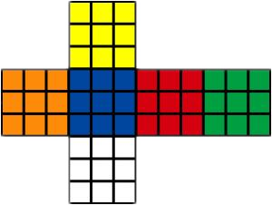
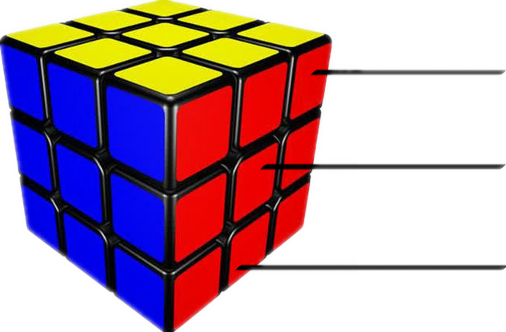
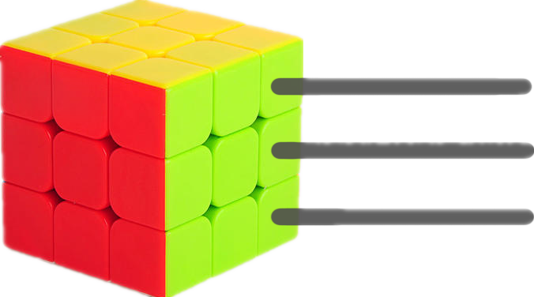

学习三阶魔方之前，让我们先来了解一下三阶魔方的特性。

三阶魔方有六个面，颜色分为：黄、蓝、红、绿、橙、白。有些魔方也会将橙替换成紫，或将白替换成黑，其余都是不正规的，无法参加正规比赛。

角块：分布在三阶魔方的角上，每块有3个颜色，一共有8个角块。
中心块：分布在三阶魔方每一面的中心，每块有1个颜色，一共有6个中心块。中心块可以确定此面复原后的颜色。
棱块：分布在三阶魔方的边上，每块有2个颜色，一共有12块。
下面我们来学习一下三阶魔方公式的解读。
fount---F:前
up------U:上
right----R:又
left------L:左
down---D:下
behind--B:后
三阶魔方的每一个公式都是由字母组成的，每一个字母都代表一次旋转魔方的方式。例如： R 指的是右面的一层顺时针旋转90°，但如果是 R' 则指的是右面的一层逆时针旋转90°（这里要注意，无论是顺时针旋转还是逆时针旋转都是以字母所指的那一面的中心为旋转点进行旋转，初学者在这一块有些难理解）。如果出现 R2 或 R'2 则分别指右面的一层顺时针旋转180°和逆时针旋转180°。
下面，我们正式开始学习三阶魔方。
三阶魔方一共有三层，我们以白色中心块为中心的一层为底层，以黄色中心快为中心的一层为顶层。

顶层
中层
底层
这里要提一下，三阶魔方初级公式是一层一层拼的，而不是一面一面拼的。